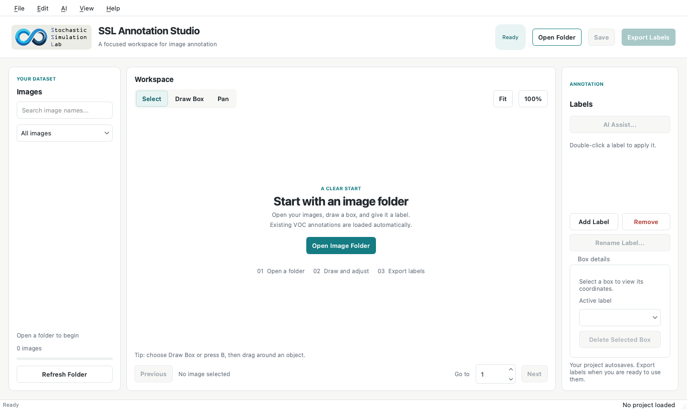
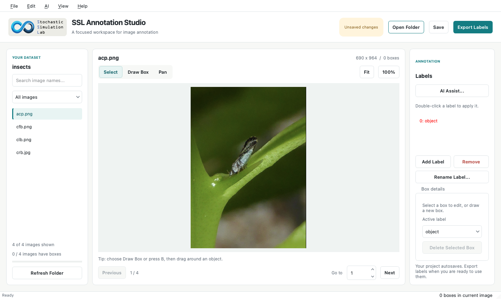
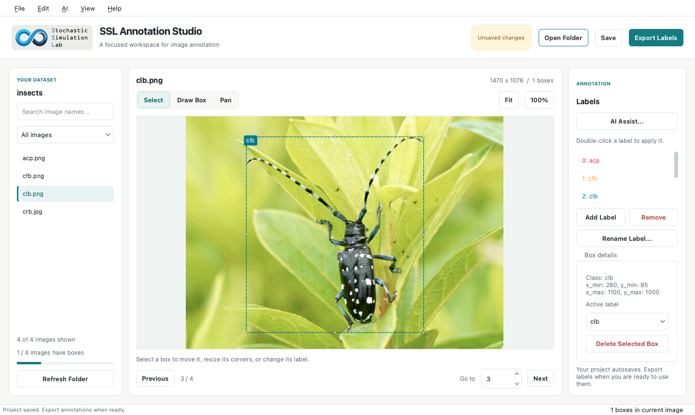
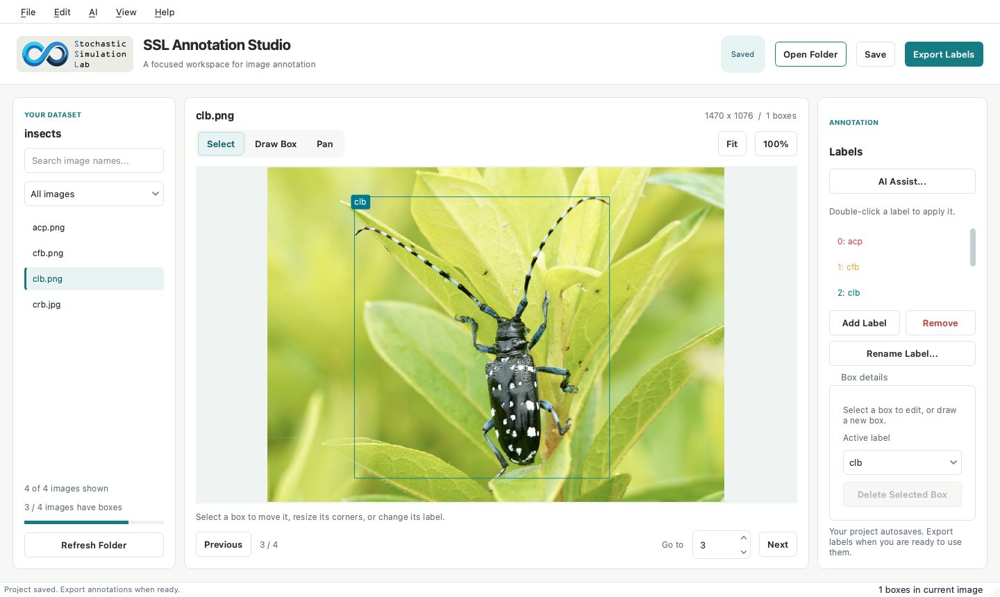
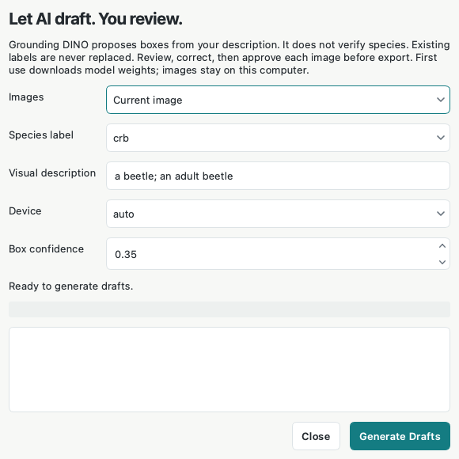
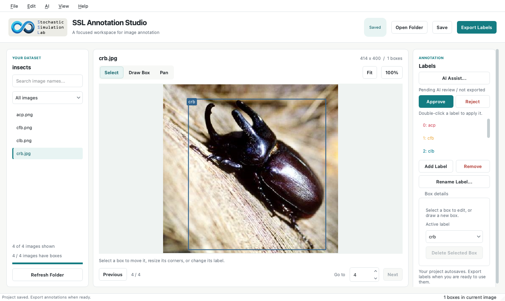
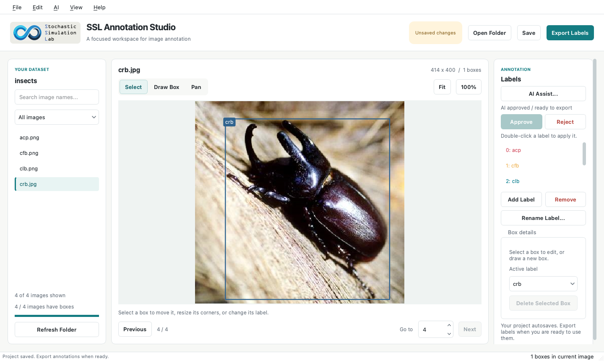

Getting started
- Download the build for your system from the GitHub page. There are two editions: Manual (small, no AI) and AI (large, includes AI Assist).
- Extract the download fully. For the AI edition, keep the whole folder (or app) together.
- Launch
SSLAnnotationStudio(orSSLAnnotationStudio-AI).
chmod +x).The window has three panels: the image list on the left, the canvas in the middle, and labels on the right.

Part 1: Manual annotation
This works in both editions and needs no internet connection.
- Open your images. Click Open Folder and choose the folder with your JPG, PNG, BMP, TIFF, or
WEBP images. If Pascal VOC XML files with matching names sit beside the images, their boxes are imported.

After Open Folder: images are listed on the left, labels on the right. - Create a label. In the right panel click Add Label and enter a name, for example
clb. Choose it in the Active label dropdown. - Draw a box. Press B (or click Draw Box), then drag around the object.
The new box takes the active label and is selected.
Draw Box active: drag around the insect (label: clb). - Adjust it. Press S for the Select tool. Drag a box to move it, or drag its handles to resize.
Press Delete to remove it.

A selected box shows resize handles and its coordinates under Box details. - Change a label. With a box selected, pick another label in the dropdown or press a number key (1-9, 0). With nothing selected, the choice applies to the next box you draw.
- Go to the next image. Press D or →. Use A or ← to go back. Your work is saved automatically.
Finding images
- Type in the search box to filter by filename.
- Choose All images, Without boxes, or With boxes. Previous and Next follow the filter, so Without boxes is a quick way to find what is left.
- Use Go to to jump to an image number, or Home / End for the first and last.
Saving
Changes autosave after about a second of inactivity and before you change images. The header shows Saved, Unsaved changes, or Save failed. Press Ctrl+S to save immediately. The progress bar counts images with at least one box. It does not mean they were reviewed.

Fixing a misspelled label
Select it in the Labels list and click Rename Label.... Every box using it is updated across all images. Export again afterward.
Exporting labels
Click Export Labels or press Ctrl+Shift+E. Files are written to an
exports folder inside your image folder.
| Format | Location |
|---|---|
| Pascal VOC | exports/voc/Annotations/*.xml |
| COCO | exports/coco/annotations.json |
| YOLO | exports/yolo/labels/*.txt and classes.txt |
Export again whenever you edit, because exports are only created on request. Your working data lives in
project.json in the same folder, with a project.json.bak backup.
Part 2: AI Assist
AI Assist drafts boxes from a text description so you can correct them instead of drawing each one. It needs the AI edition.
- Open a folder of images and create the label for what you want to find (for example
crb). - Open AI Assist. Click AI Assist... in the right panel, or use AI > Generate Drafts.
- Choose the scope.
- Current image for a quick test.
- All unannotated, unprocessed images for the whole folder. Images that already have boxes are never changed.
- Pick the label the drafts should receive.
- Describe the object. Enter what it looks like, such as
a beetle; an adult beetle. Separate several prompts with semicolons. A species name alone often works poorly. - Choose a device.
autouses a GPU when available, otherwise the CPU. You can also pickcpuorcuda:0. The default Box confidence of 0.35 is a good start. Lower it to find more objects, or raise it to cut false detections.
The AI Assist dialog. - Click Generate Drafts. Progress appears in the dialog. When it finishes you return to the canvas automatically. Use Stop only to cancel. Finished drafts are kept. If errors occur, the dialog stays open so you can read them, then choose Review Drafts or Close.
Reviewing drafts
AI boxes are suggestions. Check every image before it goes into your dataset.

- Open an image from the list. Use the filters Needs AI review, AI approved, and AI rejected to work through them.
- Correct the boxes with the same tools as manual annotation: move, resize, delete false detections, and draw anything missed.
- Decide. Click Approve if the image is right. Click Reject if it isn't usable. Rejecting never deletes the image or its boxes. AI > Reset Current Review puts it back to pending.
- Export Labels. Only approved AI images are exported.

- An image with no detections is not confirmed empty. Add a box, or reject it.
- AI does not identify species. Every box gets the label you chose, so watch for other species, caterpillars or other life stages, duplicates, and missed objects.
- Editing a box or label after approval puts the image back into review.
Keyboard shortcuts
| Action | Keys |
|---|---|
| Previous / next image | ← → or A D |
| First / last image | Home / End |
| Select / Draw box / Pan | S / B / H |
| Delete box / select all / deselect | Delete / Ctrl+A / Esc |
| Assign label by number | 1-9, 0 |
| Zoom / fit / 100% | Ctrl+Wheel / Ctrl+0 / Ctrl+1 |
| Undo / redo | Ctrl+Z / Ctrl+Y |
| Save / export | Ctrl+S / Ctrl+Shift+E |
On macOS, Ctrl may appear as Cmd.
Troubleshooting
| Problem | Fix |
|---|---|
| Security warning on launch | The app is unsigned. Use the Open / Run anyway steps in Getting started. |
| Images don't appear | Use JPG, PNG, BMP, TIFF, or WEBP files directly inside the chosen folder. |
| AI Assist is missing or says libraries are absent | Use the AI edition, and keep its whole folder together. |
| AI generation fails at first use | Check your internet connection. The model downloads on the first run. |
| AI is very slow | CPU inference is slow. Try Current image first, or process smaller batches. |
| “Save failed” in the header | Check that the image folder is writable and has free space, then press Ctrl+S. |
| Linux: app won't start | Install the Qt libraries: sudo apt install libegl1 libgl1 libxkbcommon0 |